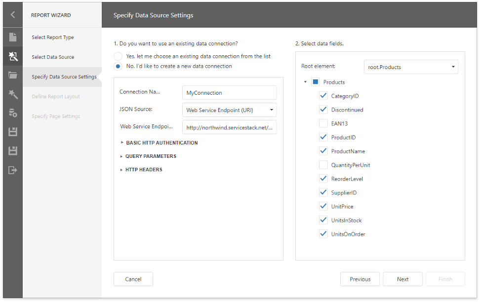
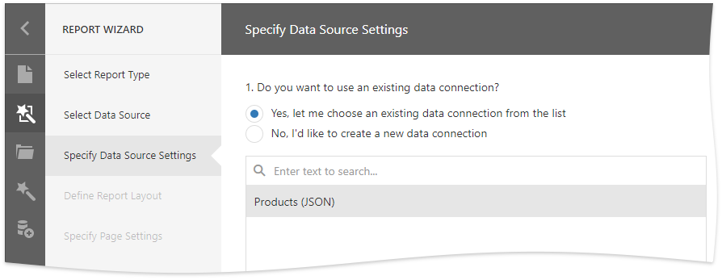
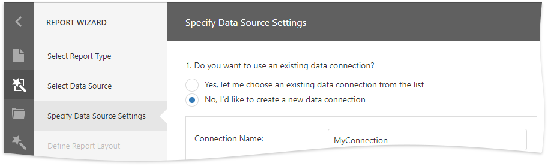
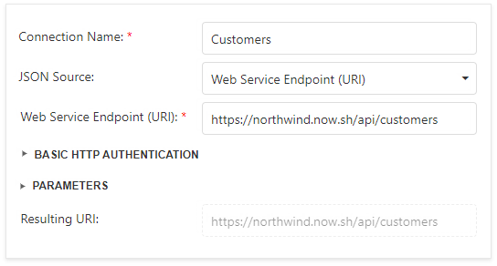
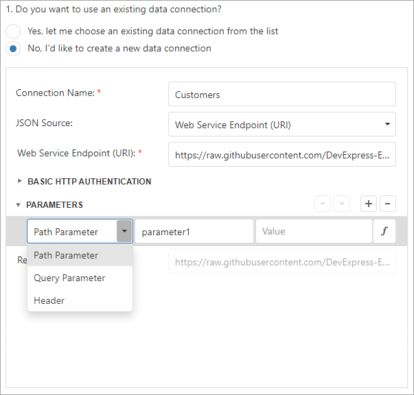
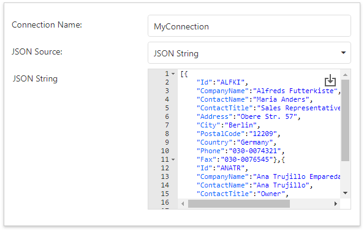
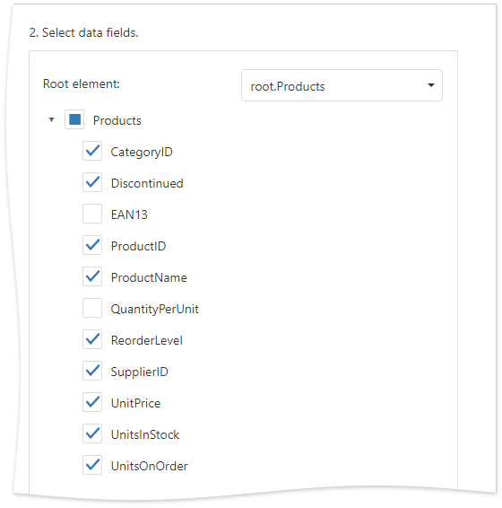

Specify Data Source Settings (JSON)
This page appears if you selected JSON on the start page.

Select an Existing Data Connection
Select the first option and choose a data connection from the list.

Create a New Data Connection
Select the second option to create a new connection.

Specify the connection name and select the JSON source type.
Web Service Endpoint (URI)

You can also specify the Web Service Endpoint's request parameters (username and password, path parameters, query parameters, or header parameters).

JSON String

You can also use the Upload JSON button to load content from the selected JSON file.
Select Data Fields
At this step, the wizard shows the JSON schema. Check the data fields you want to include in your report.

Click Next to proceed.